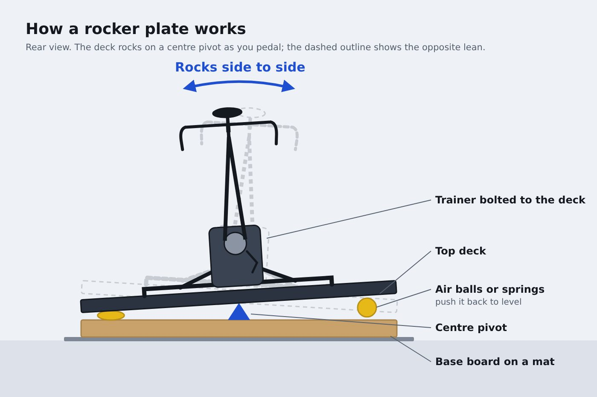

A rocker plate lets your bike and trainer sway as you pedal. Riders say it makes long sessions more comfortable. Here's whether you need one, the best options, and cheaper ways to add movement.
Updated 2 November 2026
We earn a commission if you buy through links on this page, at no extra cost to you. As an Amazon Associate we earn from qualifying purchases. Prices are UK guide prices checked on 2 November 2026; they change often, so check the retailer before you buy. How we choose products.

Illustration: PainCave Insider
What a rocker plate does
Outdoors, your bike moves under you. On a fixed trainer it can't, so your body absorbs every pedal stroke at the saddle, hands and lower back. A rocker plate sits under the trainer and lets it tilt side to side; full-motion plates also slide forwards and back.
Pros
Less saddle pressure and numbness on long rides
More natural feel when standing to climb or sprint
Less stress on your frame
Many riders find it reduces back and shoulder ache
Cons
Costs £150–£600 on top of your trainer
Raises the bike, so you need a step and more ceiling height
Takes up more floor space
Can feel strange at first and some riders never like it
Do you need one?
Probably not if you ride under an hour at a time. Consider one if you ride indoors for two hours or more, get saddle sores indoors but not outside, or race and sprint on Zwift. Try cheaper fixes first: a better saddle position, standing every 10 minutes, and good cooling.
Best rocker plates
KOM Cycling Rocker Plate
Best budget plate
Budget · check Amazon
Side-to-side
Adjustable contact points
Fits most trainers
A simple side-to-side plate that suits most direct-drive trainers. It's the one most readers can buy from Amazon with quick delivery.
Often rated the best full-motion plate available. The React version adds fore-aft movement, which takes the jolt out of each pedal stroke; the standard Realplate is cheaper and side-to-side only.
Pros
Full motion
Very well made
UK maker and support
Cons
Expensive
Takes floor space and lifts the bike
Omnirocker
UK alternative
Roughly £379–£579
Side-to-side
Fore-aft options
UK made
Another British-made plate with full-motion options. Worth comparing with Turborocks on lead time and the specific trainer you use.
Pros
Full motion options
UK made
Cons
Premium price
Sold direct, not on Amazon
Saris MP1 Nfinity platform
Most natural motion
Premium · check Amazon
Side-to-side
Fore-aft
Large platform
A big platform with natural fore-aft and lateral movement. Very expensive and large, but the closest a plate gets to riding on the road.
Cups that slip under your trainer's legs, often with tennis or rubber balls. They add a little lateral sway for very little money. Check they fit your trainer's legs before ordering.
Safety: on any plate, make sure the trainer is bolted or strapped down and the plate sits on a flat, non-slip mat. Check your trainer maker's warranty terms before fitting one.